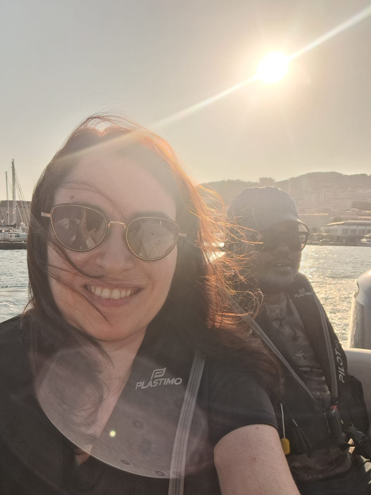

September 2026
July 2026
METAMAT Conference


July 2026
Gal's Final Year Project: Wave Trapping


June 2026
Fun Times


August 2025
Team day


May 2025
The ASA/ICA - New Orleans


April 2025
The Acoustic Metamaterials Conference - Exeter

February 2025
Group pizza party!

September 2024
The Metamaterials conference in Crete


August 2024
ISVR Southampton UK

July 2024
COMCAS - Tel Aviv


May 2024
Symposium on Acoustic Metamaterials - Aegina

March 2024
The APS March Meeting in Minneapolis


Nov./Dec. 2023
The HKUST Hong Kong


October 2023
The Institute of Sound & Vibration Research UK

September 2023
The Metamaterials conference in Crete


June 2023
Assembling circuits

May 2023
Group trip to the Sodom Salt Cave


March 2023
The APS March Meeting in Las Vegas


October 2022
The YIMQCMT in Bhubaneswar

September 2022
The Metamaterials conference in Siena


July 2022
Posing for the TAU newsletter